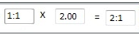
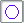
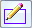
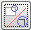

Detail command bar
- Drawing View Style Mapping
-
Specifies that the drawing view uses a predefined style, which is set on the Drawing View Style tab (Solid Edge Options dialog box).
When the Drawing View Style Mapping button is cleared, you can select and apply individual styles. Choose the style from the Drawing View Style list.
- Drawing View Style
-
Selects a style for the drawing view. This option is not available when Drawing View Style Mapping is enabled.
- Scale
-
Defines the scale of the detail view as a multiplier of the scale of the source view. You can change the value in the Multiplier box to change the resulting detail view scale.
The detail view scale is based on the calculation, Source view scale x Multiplier value = Detail view scale.
Example:-
If the source view scale=1:1, and the multiplier is 2, then the detail view scale=2:1.

-

Circular Detail View-
Specifies that the detail view shape is defined using a circular detail envelope.

Define Profile-
Specifies that the detail view shape is defined using a profile you draw. The profile must be a closed shape.

Independent Detail View-
Specifies whether a dependent detail view or an independent detail view is created.